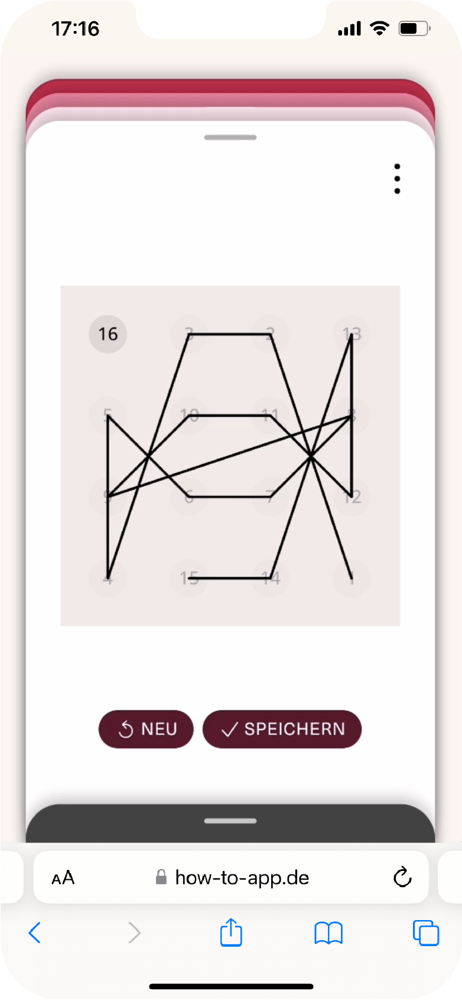

gibt es
regeln für
magie ?
»Der Prozess dieser Arbeit von 1948 bis heute zeigt ein langsames Abgleiten in meiner Entwicklung als Künstlerin: Ich komme aus einer fast religiösen Welt und finde mich wieder in einer fast wissenschaftlichen Welt.«
Vera Molnar
Vera Molnar

das spiel
Im Spiel SPUR geht es darum, welche Dimension eine Linie annehmen kann. Was beschreibt sie? Was passiert mit ihr, wenn sie sich verdichtet? Eine Linie kann so Vieles sein, Aufzeichnung, Umriss, Verbindung, Spur.
das werk
Ein Jahr, nachdem sie ihr Studium der klassischen Malerei in Budapest beendet hat, macht Vera Molnar eine Zeichnung, die sie ihr ganzes Leben lang beschäftigen wird.
»1948, als ich noch am Anfang meines nicht-figurativen, geometrischen Malabenteuers war, bemerkte ich an einem Kupferstich Albrecht Dürers, an Melencolia I rechts oben in der Ecke eine Zifferntabelle, ein magisches Quadrat. In diesem Quadrat aus 4 x 4 Feldern werden die Zahlen von 1 bis 16 so eingetragen, dass ihre Summe in den Senkrechten, den Waagerechten oder den Diagonalen stets 34 ist. Und interessanterweise stehen in der Mitte der untersten Zeile die Zahlen 15 und 14. 1514, das Jahr, in dem Dürer Melencolia I geschaffen hat. Diese Konfiguration hat mich sehr angezogen, ich vermutete darin ein verborgenes Gesetz, eine geheime Regel, die man auf die Kunst anwenden könnte.«
Vera Molnar verbindet die Zahlen des Quadrats ihrer Reihenfolge nach von 1 bis 16 mit einer Tuschezeichnung. In seiner eigentümlichen Symmetrie erscheint ihr das Ergebnis so perfekt und schön, dass sie das Bild sofort mit einem Passepartout versieht und rahmt, was sie sonst nie tut. Sie nennt es Hommage à Dürer (Huldigung an Dürer). In Melencolia I geht es um die Vieldeutigkeit des Sichtbaren, Formen der Erkenntnis und die Verflechtung von Wissenschaft und Kunst. Es gibt darin zahlreiche Verweise auf Mathematik und Geometrie, aber auch auf Phänomene wie Zeit, Licht, Horizont und Perspektive. Auch Vera Molnar versteht sich als Künstler-Wissenschaftlerin.
»Es dauerte aber jahrelang, bis ich allmählich akzeptierte, dass die Schönheit eines visuellen Kunstwerkes nicht von dem streng-mechanisch angewandten, geometrisch-logischen Aufbau kommt«.
Jahre später, als sie das inzwischen vergilbte Bild im Keller wiederentdeckt, nimmt sie sich vor, die Zeichnung weiter zu erforschen und zu befragen. Diese Magie, denkt sie, ist einfach zu stark, um nur eine einzige Zeichnung hervorzubringen. Vera Molnar sagt, sie habe viele magische Quadrate ausprobiert, aber keines erschien ihr je so schön, wie das von Dürer. So beginnt sie zunächst von Hand die Zahlen nach anderen Regeln zu verbinden, um schließlich diese Ordnung ganz aufzugeben und mit Hilfe des Computers unzählige zufällige Varianten durchzuspielen. Die Ergebnisse faszinieren sie, weil sie oft vollkommen unerwartet sind. Trotz der Unregelmäßigkeit, der Unordnung und der oft wilden Anmutung dieser Zeichnungen meint sie, die Schönheit der Dürer Zeichnung darin enthalten zu sehen, nur versteckt, unterschwellig, kaum wahrnehmbar. Sie entwickelt aus den Motiven unter anderem riesige Wandzeichnungen mit Nägeln und Faden. In den 1990er Jahren kommt sie auf ihre Ursprungszeichnung zurück und variiert die Position der Punkte, was zu einer spannenden Überlagerung von Linien und proportionalen Verzerrungen führt.
»Die Ordnung«, sagt Vera Molnar, »ist ja nur ein ganz spezieller Fall der Unordnung«.
In der Serie Hommage à Dürer zeigt sich, wie aus Ordnung Unordnung und aus Unordnung Ordnung entsteht. Und es zeigt sich, dass Magie über alle Regeln hinaus wirksam ist.
VERWENDETE UND ZITIERTE LITERATUR
https://de.wikipedia.org/wiki/Melencolia_I
https://de.wikipedia.org/wiki/Magisches_Quadrat
Vera Molnár. Entretien avec Vincent Baby. Paris 2022
Vera Molnar: Hommage à Dürer (1948-1992). In: Vera Molnár. Entretien avec Vincent Baby. Paris 2022
»1948, als ich noch am Anfang meines nicht-figurativen, geometrischen Malabenteuers war, bemerkte ich an einem Kupferstich Albrecht Dürers, an Melencolia I rechts oben in der Ecke eine Zifferntabelle, ein magisches Quadrat. In diesem Quadrat aus 4 x 4 Feldern werden die Zahlen von 1 bis 16 so eingetragen, dass ihre Summe in den Senkrechten, den Waagerechten oder den Diagonalen stets 34 ist. Und interessanterweise stehen in der Mitte der untersten Zeile die Zahlen 15 und 14. 1514, das Jahr, in dem Dürer Melencolia I geschaffen hat. Diese Konfiguration hat mich sehr angezogen, ich vermutete darin ein verborgenes Gesetz, eine geheime Regel, die man auf die Kunst anwenden könnte.«
Vera Molnar verbindet die Zahlen des Quadrats ihrer Reihenfolge nach von 1 bis 16 mit einer Tuschezeichnung. In seiner eigentümlichen Symmetrie erscheint ihr das Ergebnis so perfekt und schön, dass sie das Bild sofort mit einem Passepartout versieht und rahmt, was sie sonst nie tut. Sie nennt es Hommage à Dürer (Huldigung an Dürer). In Melencolia I geht es um die Vieldeutigkeit des Sichtbaren, Formen der Erkenntnis und die Verflechtung von Wissenschaft und Kunst. Es gibt darin zahlreiche Verweise auf Mathematik und Geometrie, aber auch auf Phänomene wie Zeit, Licht, Horizont und Perspektive. Auch Vera Molnar versteht sich als Künstler-Wissenschaftlerin.
»Es dauerte aber jahrelang, bis ich allmählich akzeptierte, dass die Schönheit eines visuellen Kunstwerkes nicht von dem streng-mechanisch angewandten, geometrisch-logischen Aufbau kommt«.
Jahre später, als sie das inzwischen vergilbte Bild im Keller wiederentdeckt, nimmt sie sich vor, die Zeichnung weiter zu erforschen und zu befragen. Diese Magie, denkt sie, ist einfach zu stark, um nur eine einzige Zeichnung hervorzubringen. Vera Molnar sagt, sie habe viele magische Quadrate ausprobiert, aber keines erschien ihr je so schön, wie das von Dürer. So beginnt sie zunächst von Hand die Zahlen nach anderen Regeln zu verbinden, um schließlich diese Ordnung ganz aufzugeben und mit Hilfe des Computers unzählige zufällige Varianten durchzuspielen. Die Ergebnisse faszinieren sie, weil sie oft vollkommen unerwartet sind. Trotz der Unregelmäßigkeit, der Unordnung und der oft wilden Anmutung dieser Zeichnungen meint sie, die Schönheit der Dürer Zeichnung darin enthalten zu sehen, nur versteckt, unterschwellig, kaum wahrnehmbar. Sie entwickelt aus den Motiven unter anderem riesige Wandzeichnungen mit Nägeln und Faden. In den 1990er Jahren kommt sie auf ihre Ursprungszeichnung zurück und variiert die Position der Punkte, was zu einer spannenden Überlagerung von Linien und proportionalen Verzerrungen führt.
»Die Ordnung«, sagt Vera Molnar, »ist ja nur ein ganz spezieller Fall der Unordnung«.
In der Serie Hommage à Dürer zeigt sich, wie aus Ordnung Unordnung und aus Unordnung Ordnung entsteht. Und es zeigt sich, dass Magie über alle Regeln hinaus wirksam ist.
VERWENDETE UND ZITIERTE LITERATUR
https://de.wikipedia.org/wiki/Melencolia_I
https://de.wikipedia.org/wiki/Magisches_Quadrat
Vera Molnár. Entretien avec Vincent Baby. Paris 2022
Vera Molnar: Hommage à Dürer (1948-1992). In: Vera Molnár. Entretien avec Vincent Baby. Paris 2022